Step 2: Installing PiVPN
Introduction:
In this section, we'll walk through the process of installing PiVPN on the deployed EC2 instance. PiVPN simplifies the setup of OpenVPN, providing a user-friendly wizard to configure the OpenVPN server and associated settings.
Workflow:
- Connect to Your EC2 Instance:
- Use SSH to connect to your EC2 instance as explained in the previous section.
- Ensure you have administrative privileges (root access) to install and configure PiVPN.
- To get into super user(root)
sudo su
- Installing PiVPN
-Run the following command to download and execute the PiVPN installation script:
curl -L https://install.pivpn.io | bash
- This command will start the PiVPN installation wizard, guiding you through the setup process.
Next Step:
Once the installation script is executed, you'll be prompted with the PiVPN installation wizard, which will assist you in configuring the PiVPN server settings.
This step-by-step approach ensures a smooth transition from connecting to your EC2 instance to initiating the PiVPN installation process.
Ensure caution while running scripts from the internet, especially with elevated privileges. Verify the source of the script before executing it.
PiVPN Installtion Wizard
Screen: Static IP Needed
Purpose: The Static IP Needed screen emphasizes the importance of assigning a static IP address to the PiVPN server for stable operation. As PiVPN functions as a server, a static IP address ensures consistency in network addressing, crucial for uninterrupted service.
Action: Press the "OK" button to proceed to the next section of the PiVPN installation wizard.
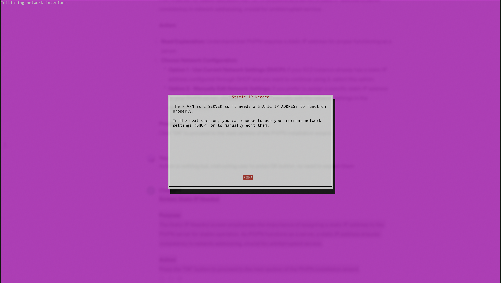
Screen: IPv6 Leak
Purpose: The IPv6 Leak screen highlights the importance of preventing IPv6 address leakage from the VPN server, even if IPv6 connectivity is not currently enabled. By forcing all IPv6 connections through the VPN, potential leaks of real IPv6 addresses to servers can be avoided, enhancing privacy and security.
Action:
Choose "Yes" to enforce routing IPv6 traffic through the VPN to block potential leakage. This is the recommended option for ensuring maximum privacy and security.
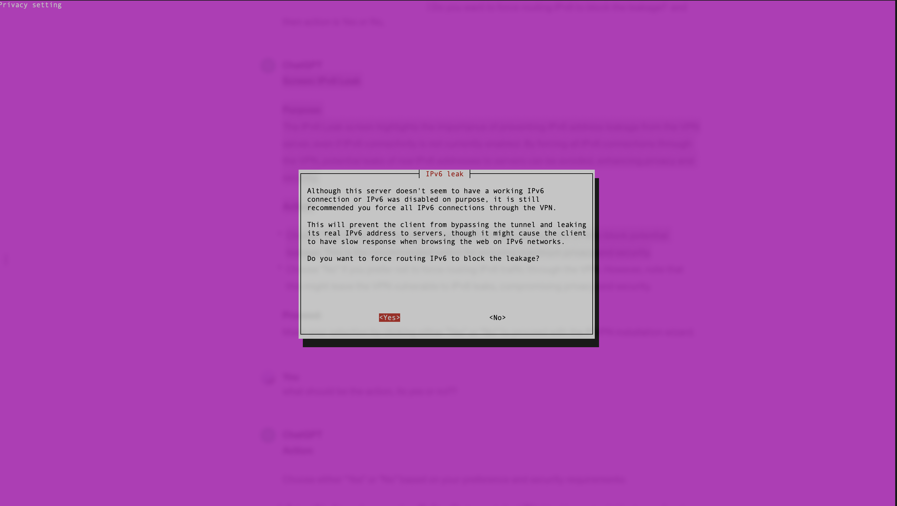
Screen: IP Information
Purpose: The IP Information screen informs the user about the absence of static IP configuration, especially for non-Raspberry Pi OS environments. Additionally, it clarifies that static IP configuration is not applicable for Amazon Web Services (AWS) instances, directing users to ensure that they have set up an Elastic IP before starting the installer.
Action: Press "OK" to acknowledge the information provided and proceed with the PiVPN installation.
During Step 1 of creating the AWS instance, an Elastic IP was created and associated with the instance. This Elastic IP ensures consistent and predictable public IP addressing for the EC2 instance hosting the PiVPN server, even if the instance is stopped and restarted.
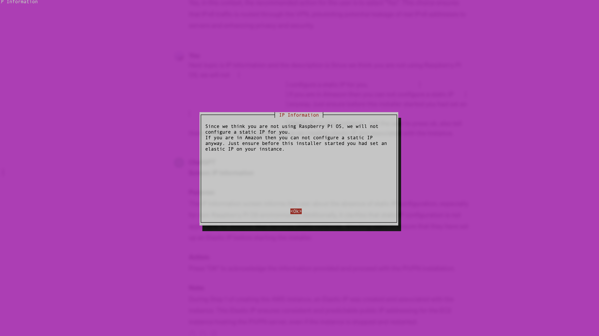
Screen: Local Users
Purpose: The Local Users screen prompts the user to select a local user account that will be associated with the OpenVPN configurations (ovpn files).
Action: Press "OK" to acknowledge the prompt and proceed with the PiVPN installation.
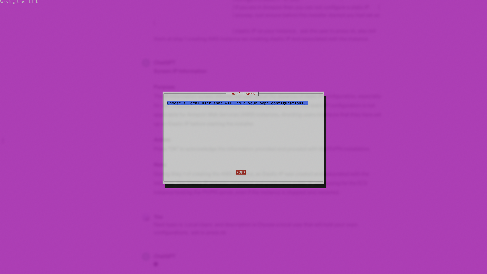
Screen: Choose A User
Purpose: The purpose of the "Choose A User" screen is to allow you to select a local user account that will be associated with the OpenVPN configurations (ovpn files).
Options:
(*) ubuntu Action: Press the spacebar to select the user "ubuntu". Then, press "OK" to confirm the selection and proceed with the PiVPN installation.
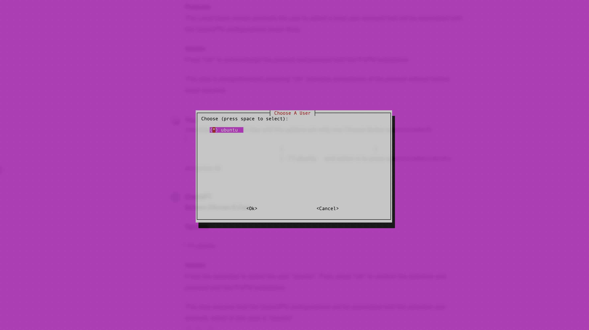
Screen: Installation Mode
Purpose: The Installation Mode screen presents two VPN options: WireGuard and OpenVPN. It provides information about each VPN protocol to help you make an informed decision based on your specific requirements
OpenVPN, remains a trusted and flexible VPN protocol. It offers features such as TCP support and custom search domain configuration, making it suitable for our use cases.
Options:
( ) WireGuard (*) OpenVPN
Action: Press the spacebar to select "OpenVPN". Then, press "OK" to confirm the selection and proceed with the PiVPN installation.
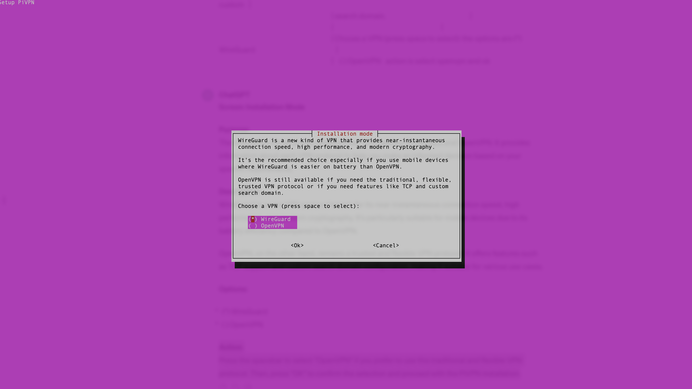
Screen: Installation Mode
Purpose: The Installation Mode screen provides the default settings used by PiVPN, which are considered suitable for most users. However, it also offers the option to customize these settings for flexibility.
Description: PiVPN uses the following settings, which are believed to be good defaults for most users:
- UDP protocol (recommended)
- No custom search domain for the DNS field
- Modern features for best compatibility, including 256-bit certificate and additional TLS encryption
Action: Press "Yes" to proceed if you prefer to customize the settings.
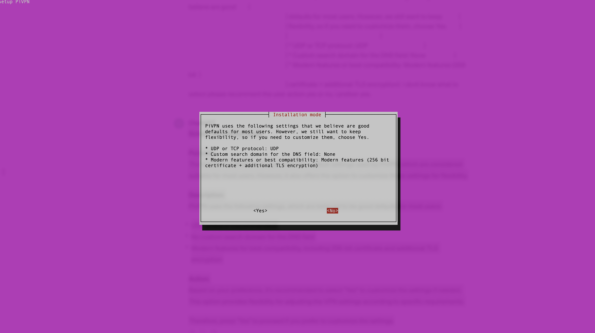
Screen: Protocol
Purpose: The Protocol screen allows you to select the protocol for your VPN connection. The default and recommended protocol is UDP, which is suitable for most users due to its speed and efficiency. However, TCP is also provided as an option for users who specifically require it, although it's advised to choose TCP only if you understand why it's necessary.
Description: Choose a protocol (press space to select). Please only choose TCP if you know why you need TCP.
(*) UDP ( ) TCP
Action: Press the spacebar to select "UDP" as the protocol for your VPN connection.
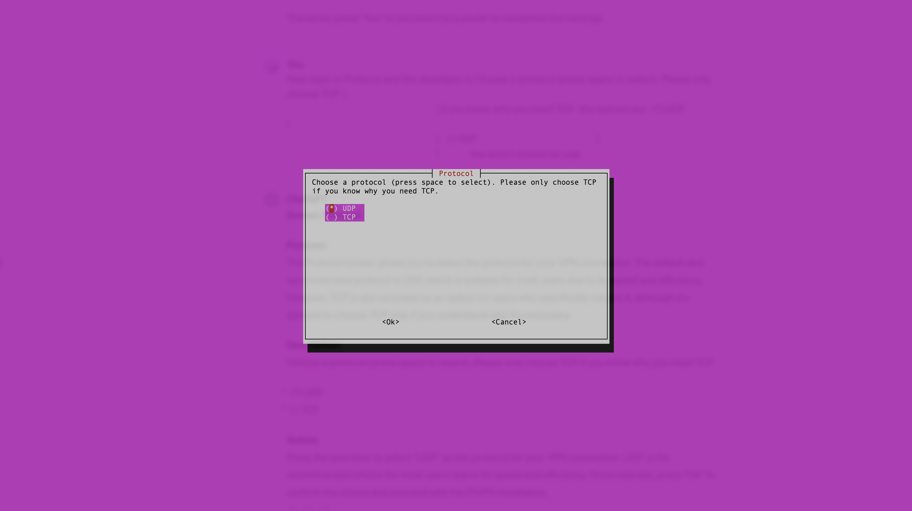
Screen: Default OpenVPN Port
Purpose: The Default OpenVPN Port screen allows you to specify the port number for the OpenVPN service. By default, OpenVPN uses port 1194. However, you have the option to modify this port if necessary.
Description: You can modify the default OpenVPN port. Enter a new value or hit 'Enter' to retain the default (1194).
Action: Press "OK" to leave the OpenVPN port as the default (1194) if you don't need to change it.
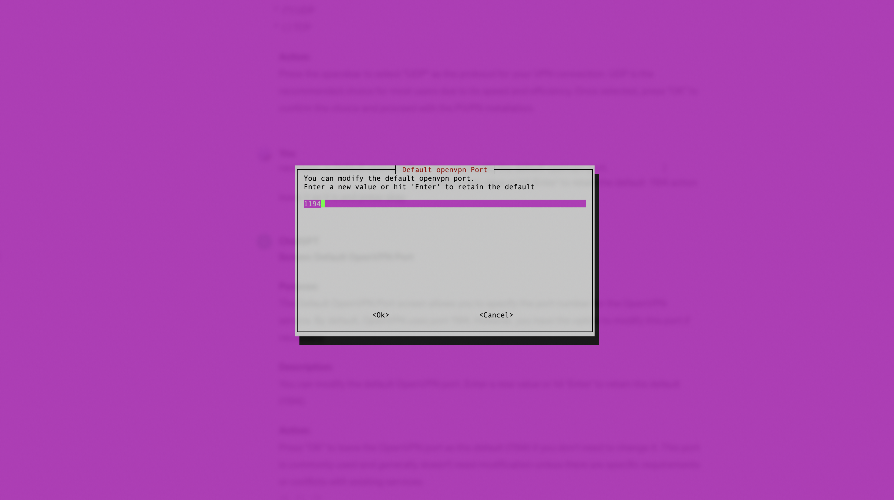
Screen: DNS Provider
Purpose: The DNS Provider screen allows you to select the DNS (Domain Name System) provider for your VPN clients. DNS is used to translate domain names into IP addresses, allowing clients to access resources on the internet.
Description: Select the DNS Provider for your VPN Clients (press space to select). To use your own, select Custom. In case you have a local resolver running, i.e. unbound, select "PiVPN-is-local-DNS" and make sure your resolver is listening on "10.254.206.1", allowing requests from "10.254.206.0/24".
Action: Choose "Google" as the DNS provider by pressing the spacebar to select it. Google's DNS service (8.8.8.8 and 8.8.4.4) is reliable and commonly used. Once selected, press "OK" to confirm and proceed with the PiVPN installation.
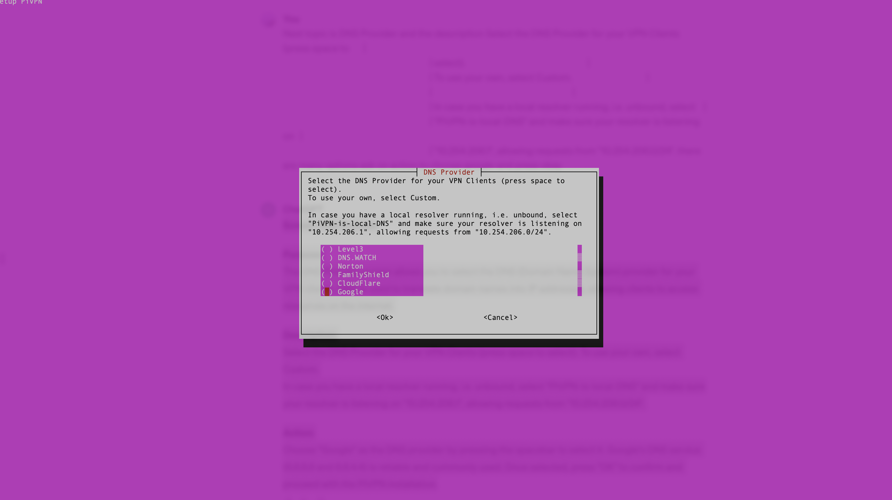
Screen: Custom Search Domain
Description: The Custom Search Domain screen allows you to specify whether you want to add a custom search domain to your VPN configuration. This option is typically used by advanced users who have their own domain and want to customize DNS resolution behavior within the VPN.
Action:
Choose "No" to indicate that you do not want to add a custom search domain.
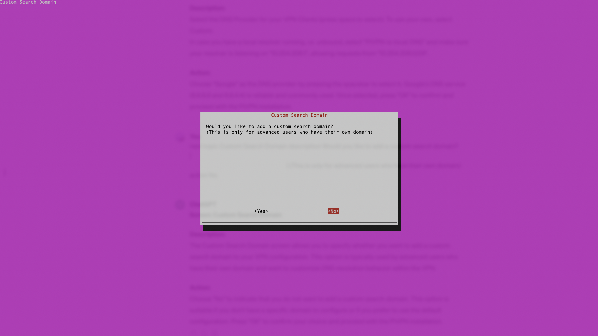
Screen: Public IP or DNS
Purpose: The "Public IP or DNS" screen allows you to specify whether clients will connect to your server using a Public IP address or a DNS name. This choice determines how clients will address the VPN server for connection.
Options:
Elastic IP (Public IP) DNS Entry (Public DNS)
Action: Select "Elastic IP" by pressing the spacebar. This option is suitable if you have associated an Elastic IP address with your EC2 instance, providing a static public IP address for consistent client connections. Press "OK" to confirm the selection and proceed with the PiVPN installation.
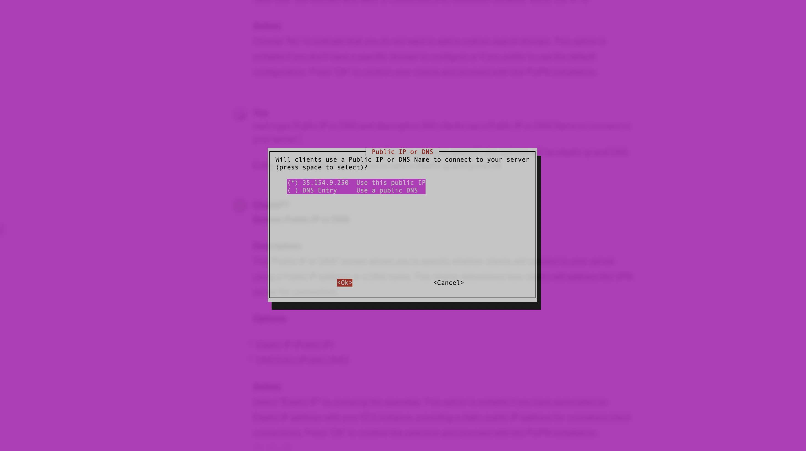
Screen: Installation Mode
Purpose: The Installation Mode screen provides information about enhanced features available in OpenVPN 2.4, particularly regarding Elliptic Curves and tls-crypt. These features offer higher connection speeds, improved security, and increased privacy for VPN connections.
Action: Select "Yes" to enable these advanced features if your clients are running OpenVPN 2.4 or later. This choice ensures optimal performance and security for VPN connections. Press "OK" to confirm the selection and proceed with the PiVPN installation.
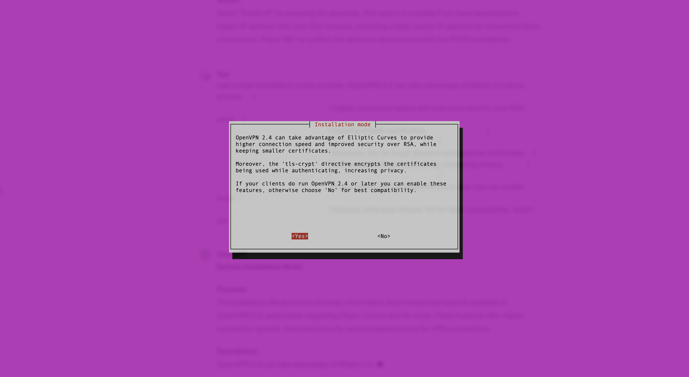
Screen: ECDSA Certificate Size
Description: The ECDSA Certificate Size screen allows you to choose the desired size of your certificate, specifically for Elliptic Curve Digital Signature Algorithm (ECDSA) certificates. This choice determines the level of security and the processing time required for certificate generation.
Options:
(*) 256 - Use a 256-bit certificate (recommended level) ( ) 384 - Use a 384-bit certificate ( ) 521 - Use a 521-bit certificate (paranoid level)
Action: Select "256" by pressing the spacebar. This option provides a recommended level of security, equivalent to 3072-bit RSA, while minimizing the certificate generation time. Press "OK" to confirm the selection and proceed with the PiVPN installation.
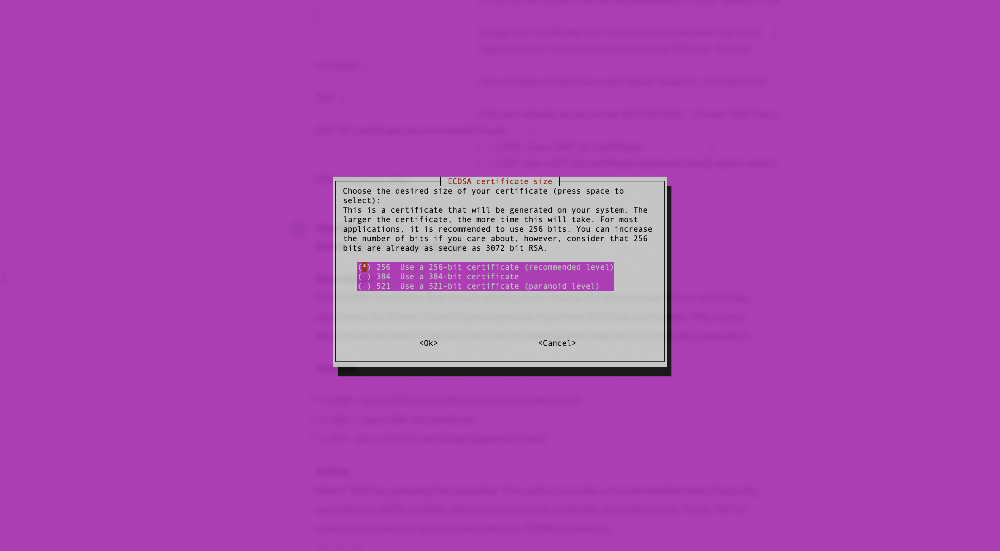
Conclusion
Now that the PiVPN installation is complete, the next step is to configure the OpenVPN server.